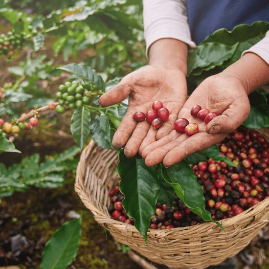
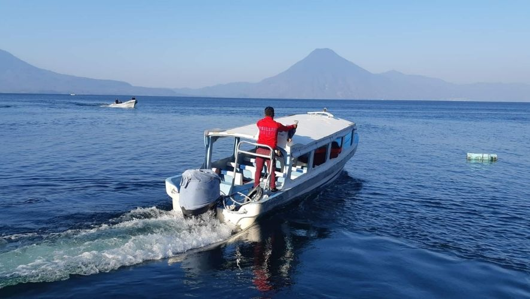
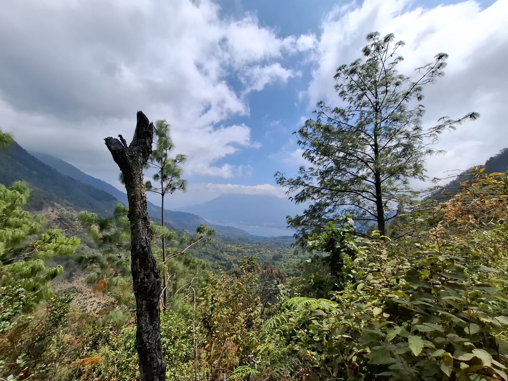
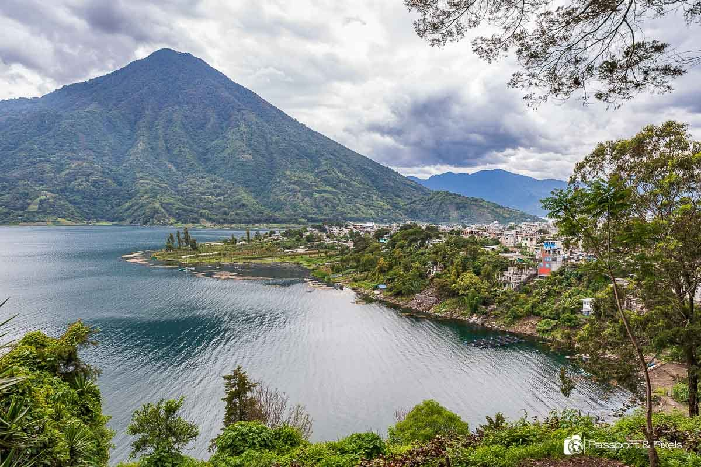
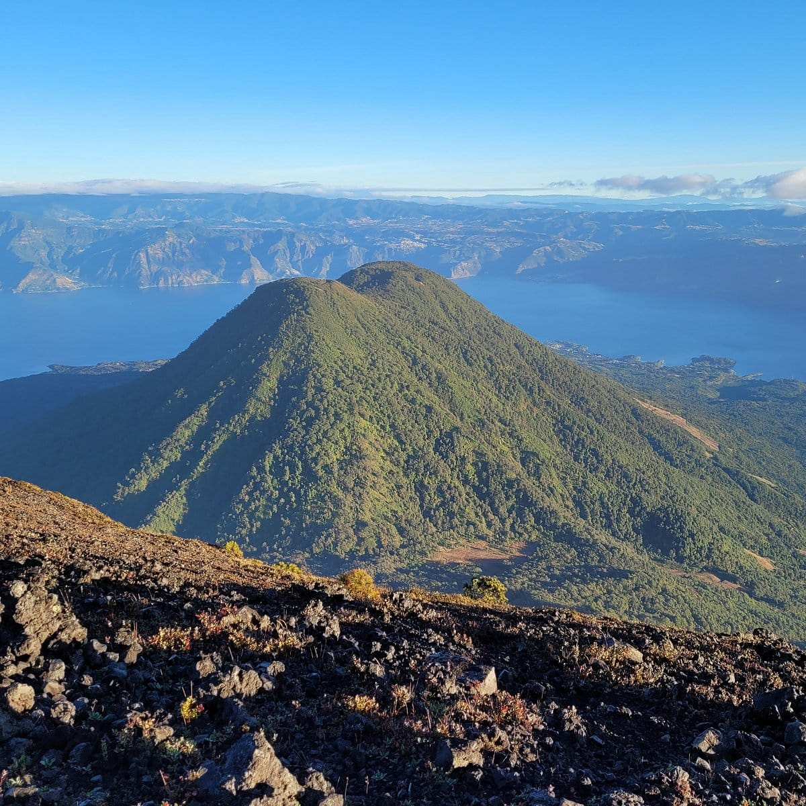
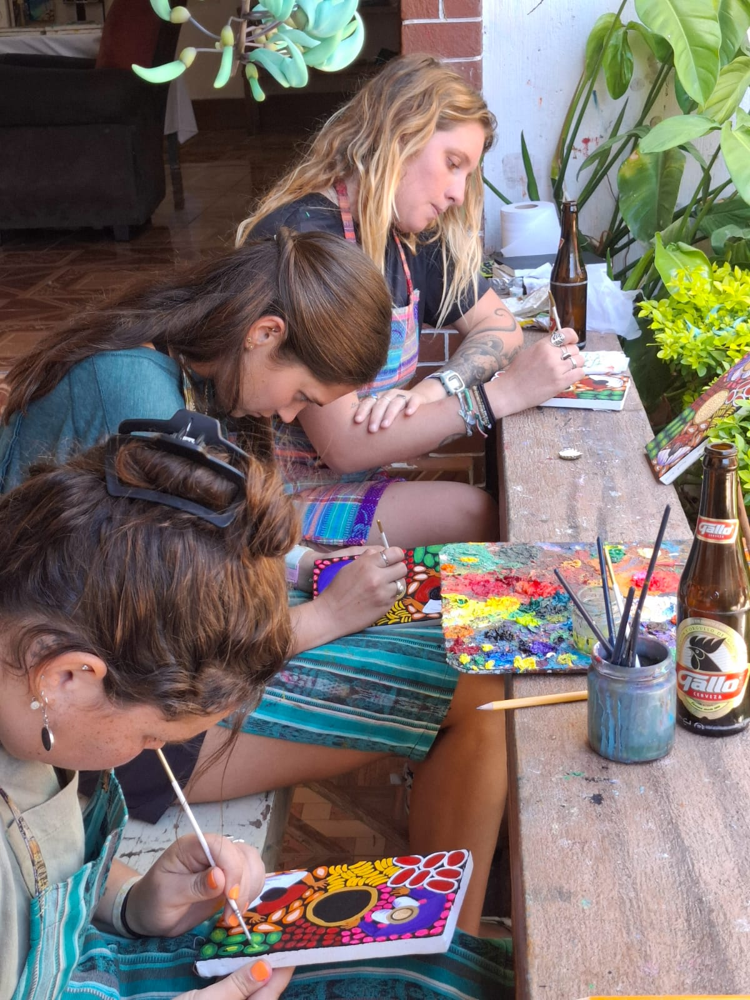
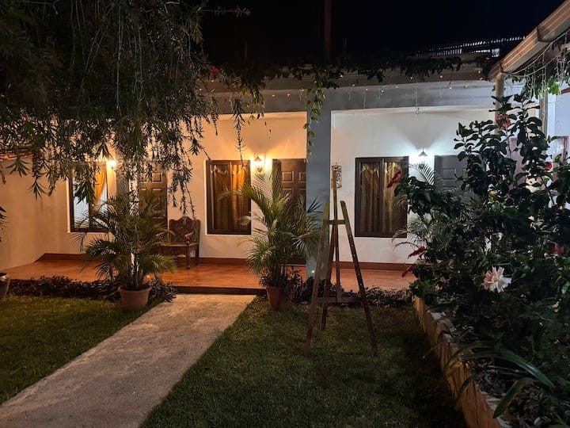

Nuestros Tours
Doce propuestas.
 Toca la foto para ampliar y deslizar (1-4).
Toca la foto para ampliar y deslizar (1-4).
Tour al Rostro Maya
Mirador Indian Nose con vista panoramica al amanecer. Incluye guia local y puntos fotograficos recomendados.
Saber mas informacion Toca la foto para ampliar y deslizar (1-4).
Toca la foto para ampliar y deslizar (1-4).
Tour Cultural en San Juan
Recorrido por arte local, cooperativas textiles y tradicion maya viva. Ideal para conocer cultura autentica.
Saber mas informacion Toca la foto para ampliar y deslizar (1-4).
Toca la foto para ampliar y deslizar (1-4).
Tour en Kayak
Aventura acuatica en aguas cristalinas con paradas para fotos y observacion de paisajes del lago.
Saber mas informacion
Toca la foto para ampliar y deslizar (1-4).Tour del Cafe
Visita a finca local para aprender el proceso del cafe artesanal, desde cultivo hasta taza.
Saber mas informacion
Toca la foto para ampliar y deslizar (1-4).Tour por el Lago
Recorrido en lancha por pueblos iconicos del lago con tiempo para explorar y capturar vistas panoramicas.
Saber mas informacion Toca la foto para ampliar y deslizar (1-4).
Toca la foto para ampliar y deslizar (1-4).
Caminata Santa Cruz
Sendero escenico con vistas del lago y volcanes, recomendado para quienes disfrutan naturaleza y caminatas suaves.
Saber mas informacion Toca la foto para ampliar y deslizar (1-4).
Toca la foto para ampliar y deslizar (1-4).
Volcan San Pedro
Ascenso guiado con rutas seguras y vistas panoramicas desde la cima para viajeros aventureros.
Saber mas informacion
Toca la foto para ampliar y deslizar (1-4).Volcan Pakisis
Ruta de ascenso guiada con paisajes unicos y contacto directo con la naturaleza del altiplano.
Saber mas informacion
Toca la foto para ampliar y deslizar (1-4).Volcan Atitlan
Ruta desafiante para aventureros con buena condicion fisica, perfecta para una experiencia de alto nivel.
Saber mas informacion
Toca la foto para ampliar y deslizar (1-4).Volcan Toliman
Explora uno de los volcanes mas imponentes de Atitlan con acompanamiento y recomendaciones de seguridad.
Saber mas informacion
Toca la foto para ampliar y deslizar (1-4).Taller de Pintura
Clase artistica con enfoque cultural en San Juan La Laguna, ideal para experiencias creativas y locales.
Saber mas informacion
Toca la foto para ampliar y deslizar (1-4).Hospedaje Xocomel
Hospedaje comodo cerca del lago, a un costado de la calle de las sombrillas, con ubicacion privilegiada.
Saber mas informacion¿Listo para reservar o ampliar informacion?
Completa el formulario: eliges actividades, fechas preferidas y recibes un PDF y un borrador de correo listo para enviar.
Llenar formulario de reserva